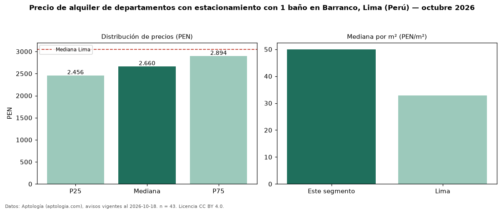

Precio de alquiler de departamentos con estacionamiento con 1 baño en Barranco, Lima (Perú) — octubre 2026
Con 43 avisos vigentes, el canon mediano de departamentos con estacionamiento con 1 baño en alquiler en Barranco, Lima (Perú) es PEN 2.660 al mes. Frente a la mediana de los departamentos con estacionamiento en alquiler de Barranco (PEN 3.000, n = 113), queda 11 % por debajo; este segmento reúne el 38 % de esos avisos. Por metro cuadrado, la mediana es PEN 50,00/m² al mes (n = 39), 16 % por encima de los departamentos con estacionamiento en alquiler de Barranco (PEN 43,16/m²). El área mediana anunciada es 50 m². El segmento con más oferta es el de 1 habitación (38 avisos, mediana PEN 2.680). La mediana de todos los departamentos en alquiler de Lima es PEN 3.050 (−13 % de diferencia). La mitad central de los avisos va de PEN 2.456 a PEN 2.894 (razón 1,2), una dispersión baja. Datos: Aptología (aptologia.com), CC BY 4.0 — https://www.aptologia.com/pe/alquiler/lima/barranco. Archivos: PDF, CSV con las cifras y gráfica PNG.

| Avisos únicos | 43 |
|---|---|
| Percentil 25 | COP 2.455 |
| Mediana | COP 2.660 |
| Percentil 75 | COP 2.893 |
| Mediana por m² | COP 50 |
Fuente: avisos vigentes de portales inmobiliarios recopilados por Aptología, deduplicados (mínimo 30 avisos únicos por celda). Precios pedidos, no cerrados. Fecha: 2026-10-18.